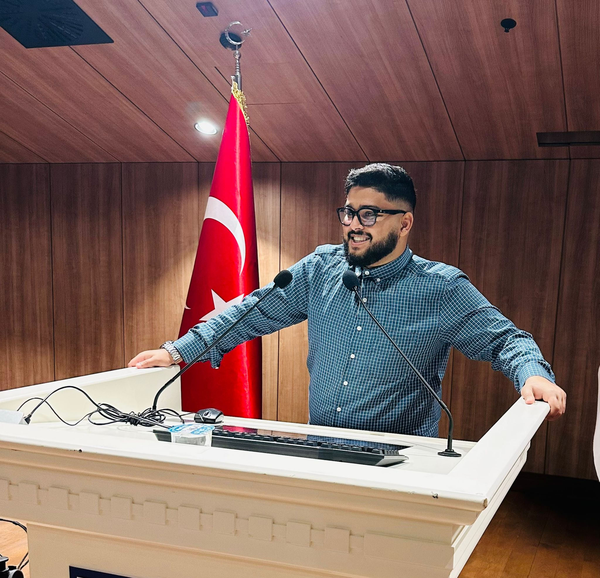

محمد زكي عبدالعزيز
طالب هندسة كمبيوتر، المستوى الثالث
مرشح للجنة الرقابة والتقييم، اتحاد الطلاب اليمنيين في تركيا - فرع كارابوك
ملخص شخصي
أنا طالب طموح حريص على تحقيق كل ما لدي من أهداف. لدي شغف بالعمل التطوعي واكتساب مهارات جديدة ومتنوعة تساهم في تطويري الشخصي والمجتمعي، وأؤمن بأهمية المشاركة الفعالة في بناء مجتمع طلابي مترابط وفاعل.
مسيرة العمل التطوعي
المهارات والمؤهلات
في هذا القسم، استعراض للمؤهلات والدورات التدريبية التي حصلت عليها. الرسم البياني يوضح توزيع هذه المهارات على مجالات مختلفة، مما يعطي فكرة سريعة عن الكفاءات الأساسية. يمكنكم الاطلاع على تفاصيل كل دورة في البطاقات أدناه.